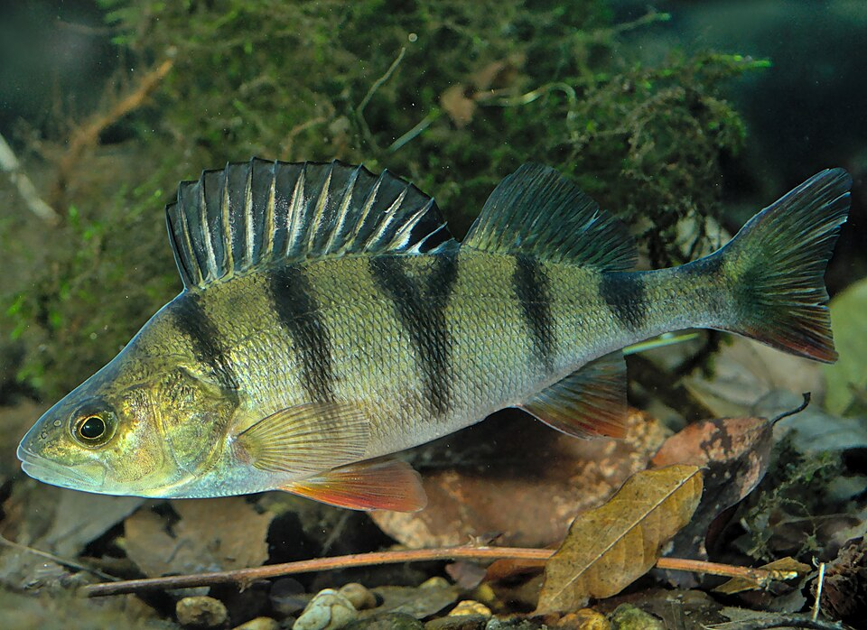
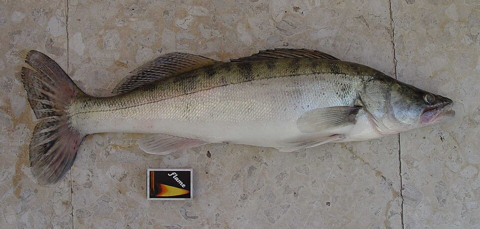
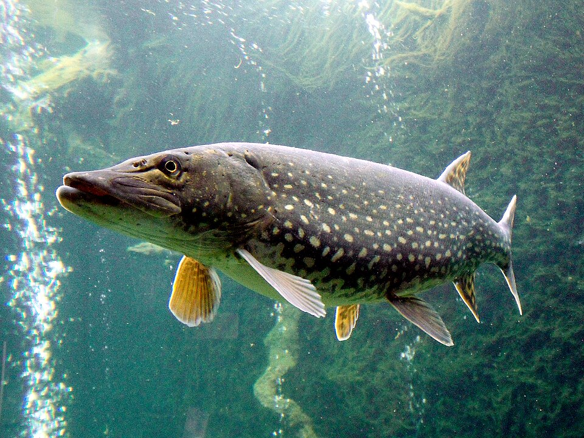
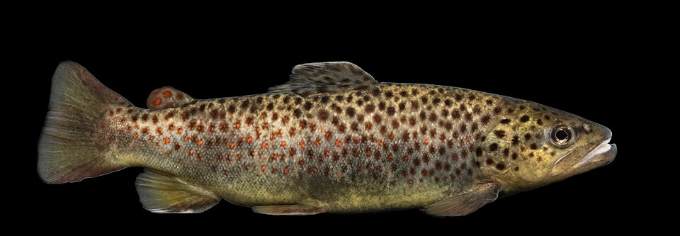
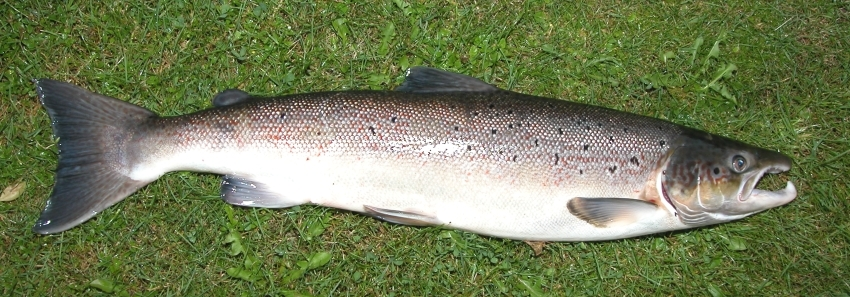
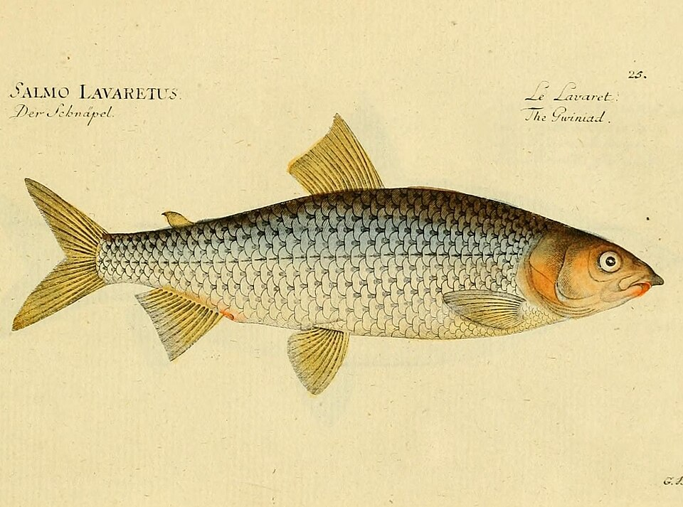
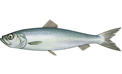
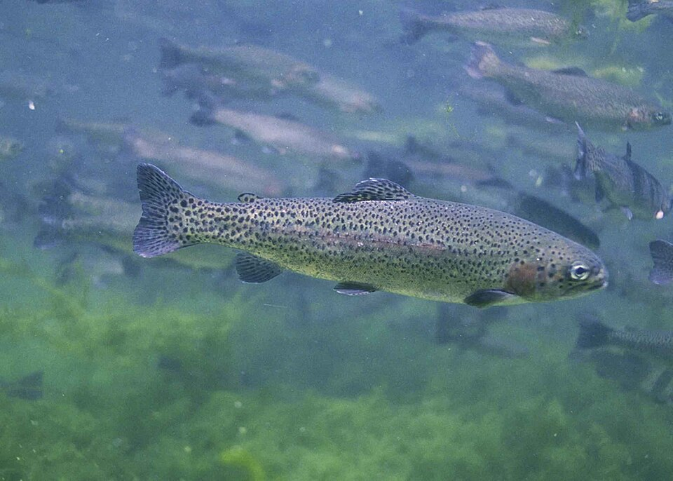
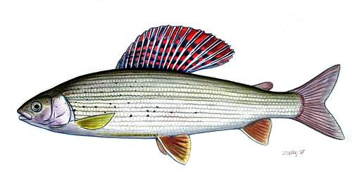
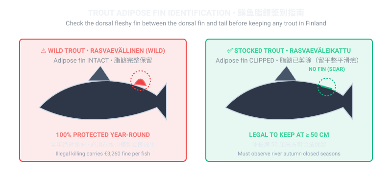

🐟 Visual Identification Gallery: Finland's 10 Game Fish Species
Before casting your line, study the visual traits, habitat, and statutory catch rules for Finland's primary species. Photographs below show live specimens in their natural coloration.

Ahven (European Perch)
Perca fluviatilis • National Fish of Finland
No Minimum Size
Keep 20–30 cm
Dark vertical tiger stripes, spiny front dorsal fin, bright orange-red pelvic and anal fins. Ubiquitous in lakes, rivers, and the Baltic archipelago. Superb table fish.

Kuha (Zander / Pikeperch)
Sander lucioperca • Prized Nordic delicacy
Alamitta: 42 cm
Spawning: May–June
Slender torpedo body, glassy reflective tapetum eyes for night hunting, mottled gold-green flanks with canine teeth. Thrives in murky lakes and coastal bays. Must release under 42 cm.

Hauki (Northern Pike)
Esox lucius • Apex freshwater predator
No Legal Minimum
Slot: 50–75 cm
Broad duck-bill snout, hundreds of razor-sharp backward-pointing teeth, mottled green with yellowish bean-shaped spots. Release large trophy females (>80 cm / 4+ kg) to protect ecosystems.

Taimen (Brown / Sea Trout)
Salmo trutta • Strict biological regulations
Wild: 100% Protected
Clipped: 50 cm
Silvery in the sea with dark cross-shaped spots; golden-brown in rivers with black and red haloed spots. Always check the adipose fin! Wild trout carry a €3,260 fine if killed.

Lohi (Atlantic Salmon)
Salmo salar • The king of Nordic rivers
Alamitta: 60 cm
River Quotas Apply
Slender caudal peduncle (tail wrist) that can be gripped firmly by hand, few spots below the lateral line, concave tail fin. Migrates up the Torne, Teno, and Simojoki rivers.

Siika (European Whitefish)
Coregonus lavaretus • Spring beach favorite
Alamitta: 30–35 cm (Sea)
Spring & Autumn
Small pointed head with inferior mouth adapted for vacuuming worms and amphipods from sandy seabeds. Brilliant silver flanks with large scales. Delicate, buttery meat.

Silakka (Baltic Herring)
Clupea harengus membras • Free public harvest
Free General Right
No Size Limit
Slender blue-green back and shimmering silver sides, small saw-like abdominal keel. Swarms in massive shoals under Helsinki bridges in May–June and October.

Made (Burbot)
Lota lota • Only freshwater cod species
Winter Spawner
Night Target
Mottled leopard skin without visible scales, broad flat head, long dorsal and anal fins, single chin barbel. Caught through frozen lake ice at night during Jan–Feb spawning. Giant liver is a luxury.

Kirjolohi (Rainbow Trout)
Oncorhynchus mykiss • Stocked sport fish
Stocked Waters
Rapid Permits
Vivid pink-red iridescent lateral band, dense small black spots covering flanks, dorsal fin, and tail fin. Stocked widely in accessible rapids (e.g. Vanhankaupunginkoski, Vantaanjoki).

Harjus (European Grayling)
Thymallus thymallus • Lady of the Stream
Alamitta: 35 cm
Lapland: 30–35 cm
Magnificent, iridescent high dorsal fin patterned with rows of reddish-purple dots. Freshly caught grayling smells pleasantly of thyme. Thrives in fast, cold, oxygen-rich northern rapids.
🔍 Crucial Trout Diagnostic: Adipose Fin (Rasvaevä) Comparison
When you land any trout in Finnish waters, your very first action before measuring length is to inspect the small fleshy fin located on the dorsal ridge between the main dorsal fin and the tail. Use this diagnostic diagram below:

Statutory Value of Protected Fish: Illegally killing an adipose-intact wild sea trout carries a mandatory compensatory conservation fine of €3,260 per fish under Finnish criminal law, plus revocation of fishing privileges.